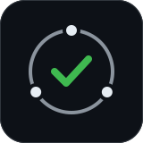

US$488,000,000
↓
6 homes
American Red Cross, Haiti 2010 · ProPublica/NPR, 3 June 2015
The same loop, across countries
Disaster funds make promises.
Almost nobody can check them.
1Money is raised before a plan exists
2The custodian keeps every record
3The people affected have no say
4Money sits, or arrives late
5Trust moves elsewhere
Hualien, Taiwan · 2024 earthquake
NT$792Mdonated to the county
16%actually paid out after 11 months
0affected households on its committee
Hualien County committee report, appendix B (27 Feb 2025) · PTS, 31 Mar 2025
Hualien, Taiwan · 2024 earthquake
16%paid out after 11 months
≈ 2×given to the national foundation instead
People did not stop giving.
They stopped trusting where it goes.
NT$1.65bn to the national relief foundation, NT$792M to the county; attributed to disputes over 2018 donations · LTN, 30 Mar 2025
Replayed on the county's own records
Kept's “held over 90 days” alert
would have fired
2 Jul 2024 · Kept flags it17 Jan 2025 · first news story we found
199 days earlier
Backtest assumes the custodian records under Kept. Sources: county committee reports; CNA, 17 Jan 2025.
Why a blockchain, and is it practical?
No single custodian controls the record
No personal data on-chain
Phase 1 works under today's law
≈ US$150–1,500 per disastergas measured on-chain, prices assumed

Kept
Disaster-relief promises you can verify
kept-lilac.vercel.app
github.com/ZhenYan1214/kept